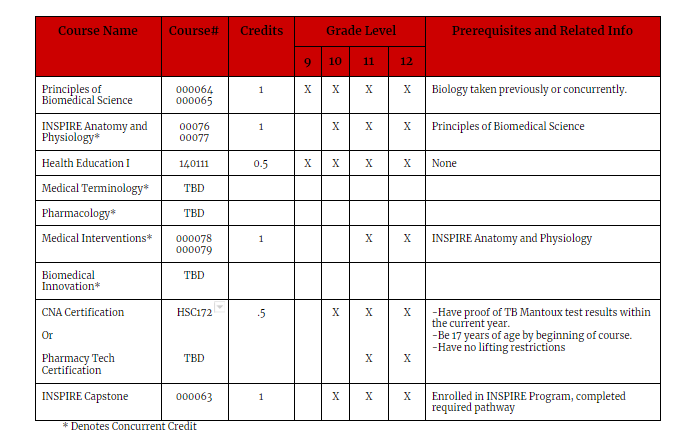

Health Services
Principles of Biomedical Science
By engaging in activities like dissecting a sheep heart, students explore concepts of biology and medicine to determine factors that led to the death of a fictional person.
Human Body Systems
Through projects such as determining the identity of a skeleton using both forensic anthropology and DNA analysis, students examine the interactions of human body systems and apply what they know to solve real-world medical cases.
Medical Interventions
Students delve into activities like designing a prosthetic arm as they follow the life of a fictitious family and investigate how to prevent, diagnose, and treat disease.
Biomedical Innovation
Students build on the knowledge and skills gained from previous courses to design their own innovative solutions for the most pressing health challenges of the 21st century.